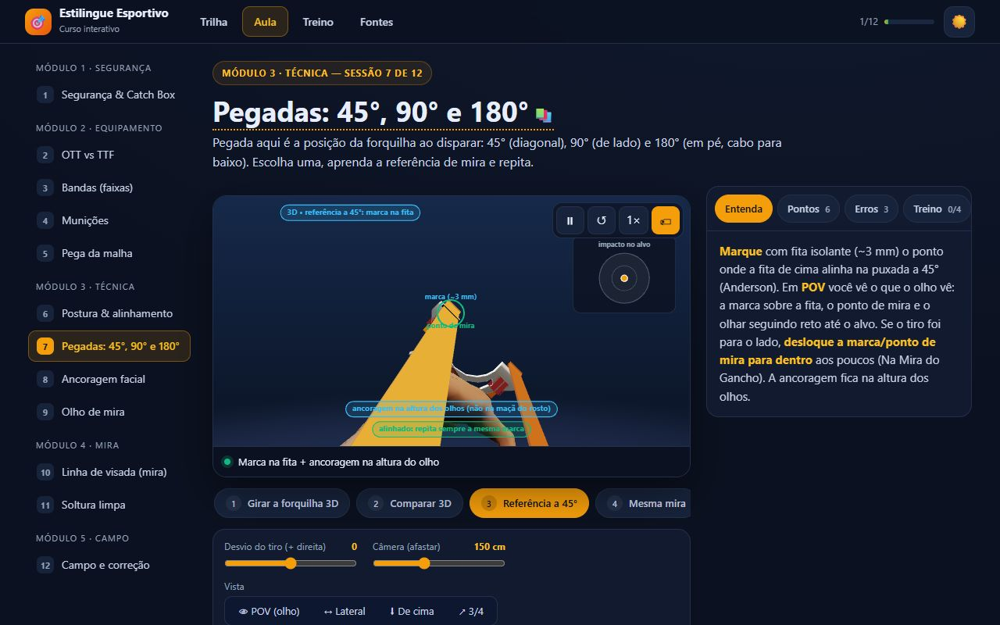

🎯 Estilingue Esportivo — Do Zero à Precisão
Aprenda tiro esportivo com estilingue com segurança, num curso interativo em 3D que abre direto no navegador.
Versão atual: v2.7.0 (23/10/2026, tag v2.7.0).
O Estilingue Esportivo é um curso prático de slingshot shooting em página única: 16 sessões em ordem didática (segurança, armação, bandas, munição, pega da malha, oficina de montagem, postura, pegadas, ancoragem, olho de mira, linha de visada, sistemas de pontaria, soltura, estilo Butterfly, campo/correção e modalidades de competição), com 53 animações interativas — boa parte em 3D com órbita por arrasto (40 cenas 3D) e personagens de verdade (Homem e Mulher), para você girar ao redor do atirador, da forquilha e da mira.
🌐 Sem instalar nada: abra
src/index.htmlem qualquer navegador. Um único arquivo (~3,4 MB, com o Three.js e os modelos 3D embutidos), sem CDN, sem rede e sem etapa de build para usar; funciona offline, no desktop e no celular (barra inferior), com tema escuro e claro. Sem WebGL, as cenas 3D voltam sozinhas ao motor Canvas. A única parte fora do arquivo é o modelo da análise de postura (experimental, ~15 MB emsrc/pose/), baixado só por quem abre essa função.
🌎 Português (BR) e English no mesmo arquivo: use o botão PT-BR | EN no topo; a escolha fica salva e, sem escolha, o curso segue o idioma do navegador. English summary ↓
⚠️ Segurança vem primeiro. Óculos de proteção, inspeção de fitas e uma catch box com panos soltos não são opcionais. Os vídeos da playlist “Dangerous Shooting” (acrobacias de risco) estão catalogados só como “não imitar”. O curso abre com um aviso de risco (uso por conta e risco, 18+ ou com adulto responsável) e não substitui um instrutor.
📚 O conteúdo vem das suas referências, não de achismo. Tudo o que o curso afirma vem de vídeos e materiais listados em
docs/04-referencias.md. O que não vem de vídeo (tabelas de fabricante, teste do olho dominante) aparece marcado como “leitura externa”; os vídeos sem fala aparecem como “diagramas (sem fala)”.

📖 A fonte de verdade do projeto é a spec, não este README. Antes de mudar qualquer comportamento, consulte
specs/(001-tutorial-animadoa009-analise-do-treino) na branchdev. O método é Spec-Driven Development (SDD): spec → plano → tarefas → código.
📑 Sumário
- 🆕 Novidades Recentes
- 🧭 O Roteiro de Treinamento
- 🚀 Arquitetura & Tecnologias
- 🎬 Tipos de Animação
- 📦 Como Usar
- 📂 Estrutura de Diretórios
- 📐 Metodologia & Branches
- 🎓 Fontes & Créditos
- 🚦 Estado Atual e Pendências
- 🇬🇧 English summary
- 📜 Licença
🆕 Novidades Recentes
28/10/2026 — materiais de apresentação e branch padrão (pasta
relatorios/, só nadev).- Em
relatorios/apresentacoes/: uma landing para devs e parceiros, uma apresentação para escolas (atividade complementar em duas trilhas) e uma apresentação para parceiros (pontos fortes do projeto). Cada apresentação é um único HTML que abre no navegador, com cenas 3D animadas, controles discretos, barra de progresso e notas do apresentador (tecla N). - A
devpassou a ser a branch padrão do repositório no GitHub. Amaincontinua com a versão estável e só recebe merge sob pedido explícito.
- Em
23/10/2026 — v2.7.0: Analise seu treino (experimental) (spec 009, fase 3).
- No Treino, um bloco em destaque, "Acompanhe sua evolução", reúne Registrar série, Gravar o treino e Analise seu treino.
- Analise seu treino: um modelo de pose (MediaPipe, Apache 2.0) roda no aparelho sobre as imagens da gravação. Ele compara a postura de cada erro com a dos seus acertos (ancoragem, braço da forquilha, cabeça, ombros, puxada, tranco na soltura) e diz o que mais mudou, com a sessão para rever.
- O modelo (~15 MB) fica em arquivos separados e só é baixado por quem usa a análise; depois funciona offline. Só as medidas ficam salvas. Experimental: ainda não validado com atiradores reais.
23/10/2026 — v2.6.0: gravação do treino com câmera (spec 009, fase 2).
- Gravar o treino: uma cena 3D com órbita mostra onde pôr o celular (com a vista de dentro do próprio celular); o tripé fica em 3/4 por trás (a mesma vista 3/4 da Sessão 1), do lado da mão que puxa e atrás da linha de tiro, o app grava a sessão, percebe cada disparo (pelo estalo da fita e pelo movimento, ou só pelo movimento) e guarda três imagens de cada tiro: puxada completa, soltura e acompanhamento.
- Revisão: linha do tempo para marcar um tiro que o app não percebeu, comparação lado a lado, linhas-guia arrastáveis (a ciano vai do olho à ponta da forquilha), autoavaliação por tiro e ligação com a série marcada no alvo, que dá acerto ou erro a cada imagem.
- Privacidade e segurança: a câmera só é pedida ao tocar em “Ligar a câmera”, depois de um checklist de segurança; o microfone não grava som; tudo fica no aparelho e só é guardado se você salvar. Ainda falta o teste em celulares reais.
23/10/2026 — v2.5.0: registro de séries no Treino (spec 009, fase 1).
- Registrar série: depois de 3 a 10 tiros, marque no alvo de papel onde cada um bateu (toque, arraste ou teclado), ou marque acerto/erro no alvo de derrubar. O app mostra os acertos, o tamanho e o centro do grupo e uma correção por vez, pela regra do curso (1 mm de ancoragem ≈ 5 cm a 10 m), com o link para a sessão que ensina aquilo. Canhotos recebem a correção lateral espelhada.
- Meus treinos: histórico no próprio aparelho, gráfico do tamanho do grupo por distância, exportação no formato do diário de treino e apagar uma série ou tudo. Nada é enviado.
22/10/2026 — v2.4.0: Expansão da ementa para 16 sessões (53 animações, 40 em 3D), Estilo Butterfly, regras oficiais WSA e resiliência WebGL. (tag
v2.4.0).- 3 novas sessões completas: Sessão 6 — Oficina de montagem (corte com cortador rotativo, amarração na malha 3D com nó constritor e Wrap & Tuck 3D nas hastes), Sessão 12 — Sistemas de pontaria (Mira de Referência × Gap Shooting × Instintivo e foco visual alvo × forquilha em 3D com atirador realista) e Sessão 16 — Modalidades e competição (pista oficial 10 m e 15 m padrão WSA, pontuação oficial de 2 a 10 pontos por placa e simulador de torneio com 5 alvos basculantes de 80 a 40 mm em 3D).
- Novas cenas e upgrades 3D nas sessões existentes: Impacto na forquilha 3D (fork hit) na Sessão 1, Empunhadura na forquilha 3D (Pinch, Thumb-Braced, Hammer) na Sessão 2, Gabarito visual taper + Fita plana × Tubo & Hand Slap na Sessão 3, Ciclo respiratório e regra dos 7 s na Sessão 7 e Curva balística 3D + Escada de distâncias (holdover) 3D com tiro inclinado na Sessão 11.
- Sessão 14 — Estilo Butterfly (reposicionada no Módulo 4 após Soltura limpa): passo a passo 3D das 6 fases (com correção de IK do braço direito nas fases iniciais), comparativo 3D de puxadas e calculadora de corte, com enquadramento 3D, cota de distância e suporte ao botão 👁 POV.
- Página de Treino enriquecida: cartão rápido “Posso atirar aqui?” (5 perguntas) e tabela do Plano progressivo de 8 semanas.
- Refinamento técnico e balística: cálculo de energia cinética ($E_k$), balística de Joules, efeito térmico no látex (< 15°C e > 32°C), aquecimento articular e prevenção de lesões, segurança contra ricochete em alvos metálicos e regra trigonométrica detalhada da ancoragem facial.
- Resiliência 3D (Three.js / WebGL): recuperação automática de contexto WebGL (
webglcontextrestored), pré-carregamento dos avatares Homem/Mulher e correção da regra da gangorra no simulador Ler o grupo e emdocs/06. - Mais cenas em 3D com o atirador realista: Visão de mira (Sessão 2, OTT × TTF, curta × longa, com POV no olho de mira), Empunhadura na forquilha 3D (Sessão 2: a mão do avatar muda para Pinça, Polegar apoiado e Martelo), Fita plana × Tubo (Sessão 3: soltura, retorno da malha e Hand Slap no avatar) e o nó constritor animado passo a passo na Amarração na malha 3D (Sessão 6: 1ª volta, diagonal em X, 2ª volta, ponta por baixo do X e aperto).
18/10/2026 — proteção de direitos. O código passou de MIT para PolyForm Noncommercial 1.0.0 (uso comercial só com autorização). O curso ganhou rodapé com © e licenças, aviso de copyright no topo do HTML,
meta copyright, links para os textos das licenças em “Créditos e licenças” e uma cláusula de uso do conteúdo nos termos (que pede novo aceite).18/10/2026 — publicação como PWA na Vercel. O arquivo do curso é
src/index.html; o personagem Boneco (manequim, licença que não permitia redistribuir) e o controle “Acabamento do boneco” foram removidos — ficam Homem e Mulher (CC0). Adicionadossrc/vercel.json(raiz e cabeçalhos), ícones PNG 192/512 eapple-touch-iconpara instalar no celular. Passos de deploy emdocs/10-publicar-na-vercel.md.18/10/2026 — v2.3.0: camada de proteção, portão de segurança e licenças (tag
v2.3.0).- Primeira abertura: tela de aviso de risco e termos (uso por conta e risco, não substitui instrutor, leia a Sessão 1 antes de atirar, 18+ ou com adulto responsável), com aceite lembrado no aparelho e link permanente no rodapé.
- Páginas novas (rodapé e módulo 1): Menores de idade (LGPD art. 14), Se algo der errado (SAMU 192, lesão ocular, corte e sangramento, modelo de relato de incidente), Equipamento com norma (óculos ANSI Z87.1 / EN 166 / CA, o que descartar, catch box mínima), Regras de comunicação e Créditos e licenças.
- Portão de segurança (spec 006): quiz de 5 perguntas (óculos, puxada, catch box, fita e zona livre); é preciso acertar todas, cada erro vem com a explicação e a aprovação fica no aparelho. Sem aprovação, o Treino e a home mostram um lembrete e nenhuma sessão conta como concluída; a leitura nunca é bloqueada.
- Licenças (spec 007): código MIT, conteúdo CC BY-NC 4.0, marca reservada;
LICENSE,LICENSE-CONTENT.mdeNOTICE; a MIT do three.js vai dentro do arquivo do curso. (Em 18/10/2026 o código passou a PolyForm Noncommercial 1.0.0; veja a primeira entrada desta lista.) - Mudanças de interface: no celular os ajustes da cena ficam sempre expostos (sem o botão “Ajustar”); a página Fontes e os nomes de autores saíram do curso (as referências ficam em
docs/04-referencias.md; os créditos de modelos 3D, na página Créditos e licenças). - Ainda pendente: as revisões externas (saúde, revisor técnico, advogado) — as telas mostram o selo “Revisão pendente”. Guia:
docs/09-avisos-e-socorro.md.
17/10/2026 — v2.2.0: curso bilíngue, PT-BR e inglês (tag
v2.2.0). Botão PT-BR | EN no topo: interface, as 12 sessões, os controles e os textos desenhados dentro das animações existem nos dois idiomas, no mesmo arquivo e sem recarregar a página. Números seguem o idioma (vírgula ou ponto decimal), títulos de vídeos em português ficam no original com uma tradução curta, e a lei brasileira aparece como exemplo, com aviso para conferir a legislação do seu local. Onpm testagora falha se faltar tradução.17/10/2026 — README e capturas de tela renovados para o layout v2.1 (home em tema escuro e claro, aulas no celular e no computador).
17/10/2026 — v2.1.3 (tag
v2.1.3). Ícone na aba do navegador (favicon SVG embutido no próprio arquivo).17/10/2026 — v2.1.2 (tag
v2.1.2). Créditos no rodapé com links e ícones: TadeuReinaldo abre o WhatsApp e tazzeus abre o Instagram.17/10/2026 — v2.1.1 (tag
v2.1.1). O arquivo do curso passou a se chamarsrc/Curso_Estilingue.html(voltou asrc/index.htmlem 18/10/2026) e o rodapé traz o crédito "Develop by TadeuReinaldo - tazzeus".17/10/2026 — v2.1.0: novo layout, celular primeiro (tag
v2.1.0). Home de trilha em cinco módulos, player de aula com painel de estudo (Entenda, Pontos, Erros, Treino, Fontes), barra inferior e folha de ajustes no celular, página de Treino, tema escuro e claro, ocultar legendas, um olho fechado no atirador, fitas planas OTT/TTF, cenas refeitas (gangorra, correção no papel, curva balística, soltura, vento, ler o grupo) e sem áudio.16/10/2026 — v2.0.0: 3D com personagens de verdade (tag
v2.0.0). Todas as cenas 3D passam a usar Three.js embutido (WebGL, luz e sombra suave) com personagens glTF com esqueleto (Homem e Mulher; o Boneco em madeira/branco/preto existiu até 18/10/2026), pose por IK, óculos de atirador, forquilha e malha em modelo 3D e linha tracejada do olho até a forquilha. A ancoragem fica no canto da boca, sem a puxada atravessar a cabeça, e a mão fecha em volta do cabo. Sem WebGL, as cenas voltam sozinhas ao motor Canvas.15/10/2026 — Diagramas no estilo YUUI. UP/DOWN (a altura da malha muda a linha de mira), TTF × OTT (alinhamento esquerda–direita), esfera centralizada na malha e placa de fixação a 90°: reproduções 2D fiéis aos quadros da playlist “Slingshot Shooting PRI”, com “THE GOOD / NO GOOD” em vermelho.
15/10/2026 — Corpo e mãos detalhados. Atirador com membros cônicos, cabeça com óculos, mão que empunha o cabo (palma, quatro dedos e polegar) e pinça que segura a esfera.
15/10/2026 — 3D com órbita em tudo que tem forma no espaço. Catch box, óculos, direção da puxada, montagem OTT/TTF, corte da fita, malha, postura, mão em diagonal, pegadas, ancoragem, olho de mira, linha de visada, fita sobre fita e soltura.
15/10/2026 — Munições lado a lado. Esferas de 6 a 19 mm em escala real sobre grade de 1 cm, com massa por material (aço, chumbo, argila, vidro) e quais cabem em cada malha.
15/10/2026 — Novas sessões: Bandas (espessura × finalidade, corte, vida útil), Munições, Olho de mira (paralaxe 3D e teste do triângulo) e Pegadas 45° / 90° / 180° em pé.
15/10/2026 — Menu lateral por sessão, com hambúrguer no celular, progresso salvo no navegador e distância atirador→alvo (em metros) em toda animação. Curta = 5–10 m; longa = 20–50 m.
🧭 O Roteiro de Treinamento
| # | Sessão | O que você aprende |
|---|---|---|
| 1 | Segurança & Catch Box | Óculos, direção da puxada, contenção sem ricochete e prevenção de fork hit |
| 2 | OTT vs TTF | Armações, ponto de mira, alinhamento e estilos de empunhadura (Pinch, Thumb-Braced, Hammer) |
| 3 | Bandas (faixas) | Espessuras 0,4–1,0 mm, gabarito taper, vida útil, fita plana × tubo e Hand Slap |
| 4 | Munições | Materiais, tamanhos e peso comparados lado a lado |
| 5 | Pega da malha | Tipos de malha, centralização, pegada junto à esfera |
| 6 | Oficina de montagem | Corte com cortador rotativo, nó constritor na malha e Wrap & Tuck nas hastes |
| 7 | Postura & alinhamento | Posição de tiro de lado em 3D, mão em diagonal, ciclo respiratório e janela de 7 s |
| 8 | Pegadas 45°, 90° e 180° | Inclinação da forquilha e referência de mira em cada uma |
| 9 | Ancoragem facial | Boca × orelha, gangorra (altura da malha × impacto), posição da cabeça |
| 10 | Olho de mira | Dominância ocular, paralaxe e como o outro olho “escapa” |
| 11 | Linha de visada (mira) | POV 3D, fita sobre fita, correção no papel, agrupamento, curva balística e escada de distâncias |
| 12 | Sistemas de pontaria | Mira de Referência × Gap Shooting × Instintivo e foco visual (alvo nítido × forquilha) |
| 13 | Soltura limpa | Follow-through de 2 s, abertura dos dedos e saída limpa da malha |
| 14 | Estilo Butterfly | Puxada longa atrás da cabeça (6 fases em 3D), comparativo de puxadas e calculadora de corte |
| 15 | Campo e correção | Ler o grupo, inspeção da fita, vento e onde atirar |
| 16 | Modalidades e competição | Pista oficial 10 m / 15 m (WSA), alvos basculantes de 4 a 8 cm (2 a 10 pts) e simulador de torneio |
Cada sessão tem pontos-chave, erros comuns e treino prático (checklist salvo no navegador). As referências de cada tema ficam em docs/04-referencias.md.
Sob o módulo 1 há ainda as páginas Regras de comunicação, Equipamento com norma e o Quiz de segurança.
🚀 Arquitetura & Tecnologias
Projeto 100% estático, em um único index.html:
- 🎨 UI — HTML + CSS puros, temas escuro e claro, home de trilha por módulos e player de aula; no celular, barra inferior e ajustes da cena sempre expostos (layout aprovado na spec 003).
- 🧊 3D com Three.js embutido — as cenas 3D rodam em WebGL (Three.js r186 enxuto, sem CDN, dentro do próprio arquivo): luz e sombra suave, personagens glTF com esqueleto (pose por IK a partir da posição do tiro), forquilha e malha em modelo 3D, óculos de atirador e cabelo/roupa por máscara de cor. O personagem (Homem ou Mulher) é escolhido na própria cena. O motor 3D próprio em
<canvas>(projeção em software, sem bibliotecas) ficou como reserva automática para aparelhos sem WebGL. - 🖼️ Gráficos e simuladores 2D — Canvas 2D (a área da animação é escura nos dois temas: agrupamento, correção no papel, vento, curva balística), com controles interativos e opção de ocultar legendas.
- 💾 Persistência —
localStoragepara progresso, preferências e treinos marcados; IndexedDB (estilingue-treino) para as séries registradas e as gravações do Treino. Sem IndexedDB, os dados ficam só na memória da página, com aviso. Nada é enviado. - 📷 Treino com câmera — a câmera só é pedida ao tocar em “Ligar a câmera”, depois do checklist de segurança. A análise de postura (experimental) usa o MediaPipe Pose (Apache 2.0) no próprio aparelho e guarda só as medidas.
Nada de rede: o curso funciona offline. A exceção é a análise de postura, que baixa o modelo (src/pose/) do mesmo endereço do curso, só para quem abre essa função; depois também funciona offline.
🎬 Tipos de Animação
| Tipo | Quando é usado | Interação |
|---|---|---|
| 3D com órbita | Tudo que tem forma no espaço (corpo, mãos, forquilha, malha, fitas, POV) | Arrastar para girar, slider de câmera, vistas prontas, escolha do personagem (Homem, Mulher) |
| POV do atirador | Ancoragem, olho de mira e linha de visada | Troca de pegada, paralaxe de dois olhos, distância 5–50 m |
| Gráficos e simuladores (2D) | Espessura, massa, correção no papel, agrupamento, vento, curva balística | Sliders, botões de padrões e de correção |
📦 Como Usar
Abrir direto:
# duplo clique em src/index.html, ou:
start src/index.html # Windows
open src/index.html # macOS
xdg-open src/index.html # Linux
Ou servir localmente (útil para testar no celular na mesma rede):
cd src
python -m http.server 8000 # http://localhost:8000
Navegação: Trilha · Aula · Treino (barra inferior no celular) · setas ← → trocam de sessão · espaço pausa a animação · rodapé: termos, menores, “Se algo der errado” e créditos.
Acessibilidade: navegação 100% por teclado (abas com setas; nas cenas 3D, setas giram, +/− aproximam e Home volta), leitor de tela com descrição de cada animação, foco visível e respeito a reduzir movimento.
Personagem: nas cenas com pessoa há os controles Personagem (Homem, Mulher); a escolha vale para as outras cenas. Em toda cena com corpo há uma linha tracejada ciano do olho até a ponta da forquilha (“olhar”), e o atirador usa óculos de proteção.
No celular: o toque rola a página; toque em “☝️ Girar com o dedo” para girar as cenas 3D (um dedo gira, dois dedos fazem pinça de zoom).
📂 Estrutura de Diretórios
estilingue/
├── README.md # Este arquivo
├── LICENSE # Código: PolyForm Noncommercial 1.0.0
├── LICENSE-CONTENT.md # Conteúdo: CC BY-NC 4.0
├── NOTICE # Escopo das licenças e terceiros
├── src/ # Raiz do site na Vercel
│ ├── index.html # O curso interativo (arquivo único: Three.js e modelos 3D embutidos)
│ ├── pose/ # Modelo de pose (MediaPipe), baixado só pela análise de postura
│ ├── manifest.webmanifest # PWA
│ ├── sw.js # Service worker (offline)
│ ├── vercel.json # Cabeçalhos do site (câmera e microfone só na própria página)
│ └── icon.svg, icon-*.png, apple-touch-icon.png
├── docs/
│ ├── 01-seguranca.md # Protocolos de segurança e EPIs
│ ├── 02-equipamento.md # Armações, fitas, malhas e projéteis
│ ├── 03-tecnica-e-tiro.md # Postura, ancoragem, visada e soltura
│ ├── 04-referencias.md # Vídeos/playlists de referência e o que cada um ensina
│ ├── 05…08-*.md # Fitas, leitura do grupo/vento, campo e legislação, plano de treino
│ ├── 09-avisos-e-socorro.md # Aviso de risco, menores, socorro, equipamento com norma e regras de comunicação
│ ├── 10-publicar-na-vercel.md # Deploy na Vercel como PWA
│ ├── diario-de-treino.md # Registro de sessões, evolução e agrupamentos
│ ├── licencas/ # Capturas das licenças dos modelos 3D e avaliação do que falta
│ ├── img/ # Foto de referência da pegada 180° (em pé)
│ └── prints/ # Capturas de tela usadas neste README (layout v2.1)
├── specs/ # (branch dev) Spec-Driven: spec, plan, tasks
├── relatorios/ # (branch dev) Análise de negócio e materiais de apresentação
│ └── apresentacoes/ # landing/, deck-escolas/ e deck-investidores/ (apresentações em HTML único)
├── prototipos/ # (branch dev) Ferramentas descartáveis fora do curso
├── i18n/ # (branch dev) Dicionário EN (en.json) e ferramentas: `npm run build:i18n`, `i18n:collect`, `i18n:audit`
├── tests/ # (branch dev) Smoke test: `npm test`
├── vendor/ # (branch dev) Three.js enxuto, avatares e forquilha: scripts, créditos e README
├── modelos-origem/ # (local, fora do git) Pacotes originais dos modelos 3D
└── AGENTS.md # (branch dev) Regras e memória para qualquer IA
📐 Metodologia & Branches
- Spec-Driven Development (SDD): toda mudança relevante nasce numa spec em
specs/NNN-nome/antes do código. dev— branch de trabalho e branch padrão do repositório (desde 28/10/2026): tudo é commitado aqui (incluispecs/,relatorios/eAGENTS.md).main— versão estável e mais funcional, somente com o necessário para o projeto:README.md,src/,docs/, os arquivos de licença (LICENSE,LICENSE-CONTENT.md,NOTICE) e.gitignore/.gitattributes. Nada vai para amainsem pedido explícito do mantenedor, e cada versão estável recebe uma tag (v2.0.0, …).- Qualidade: antes de cada commit que mexe no curso roda o
npm test(cenas, tradução, ARIA, recursos externos).
🎓 Fontes & Créditos
O curso foi construído a partir de vídeos de atiradores e instrutores — todos os créditos aos autores:
| Fonte | Autor | Uso no curso |
|---|---|---|
| Videoaulas de mira | Anderson — ESTILINGUE 4A | Ponto de mira, papel com cruz, alinhamento a 45° com marca de fita |
| “Mira e dispara” | Coelho | Postura de tiro de lado, OTT × TTF, gangorra da ancoragem |
| Portal do Estilingue | Ailton Bonassa | Bandas, munição, malha, ancoragem na orelha, soltura, 2 s de follow-through |
| Playlists “45°”, “Distance shot” | SlingshotSniper | Mira a 45° (só títulos/descrições) |
| “Ponto de mira a 45°” | Na Mira do Gancho | Ancoragem na altura do olho a 45° |
| Slingshot Shooting PRI | YUUI | Referência visual de alinhamento (diagramas sem fala): TTF × OTT, soltura, curva balística |
| Tabelas e guias | Simple Shot, AllAboutVision, Super Rádio Tupi | Espessuras × esferas e teste do olho dominante (leitura externa) |
Detalhes, links e o que foi transcrito de cada vídeo: docs/04-referencias.md.
🧊 Créditos de modelos 3D e bibliotecas
- Personagens e cabelos: Universal Base Characters [Standard], de Quaternius — CC0 1.0.
- Forquilha e malha: Lowpoly slingshot, de seqw0 (Sketchfab) — CC BY 4.0; modificado (só a armação e a malha de couro; texturas reduzidas).
- Renderização 3D: three.js (MIT), embutido no arquivo.
- A página Créditos e licenças do curso (link no rodapé) repete esses créditos. As capturas das licenças e o que ainda falta documentar estão em
docs/licencas/. - A página “Fontes” do curso foi removida em 18/10/2026; a lista de vídeos continua em
docs/04-referencias.md.
🚦 Estado Atual e Pendências
- ✅ 16 sessões, 53 animações (40 em 3D com órbita), home de trilha por módulos, barra inferior no celular e progresso salvo (que só conta após o quiz de segurança).
- ✅ v2.7.0: "Analise seu treino" (experimental), com o modelo de pose no aparelho; os três cartões do Treino em destaque. Pendente: validação com atiradores reais e revisão LGPD/técnica.
- ✅ v2.6.0: gravação do treino com câmera, quadros-chave por tiro, linhas-guia e ligação com a série (spec 009, fase 2). Pendente: teste em Android e iPhone com câmera e estalo reais.
- ✅ v2.5.0: registro de séries com leitura do grupo, correção sugerida e histórico no aparelho (spec 009, fase 1).
- ✅ v2.4.0: Expansão para 16 sessões com Oficina de montagem (nó constritor e Wrap & Tuck 3D), Sistemas de pontaria (Referência, Gap, Instintivo), Estilo Butterfly 3D, pista oficial WSA (10 m / 15 m) com simulador de 5 alvos (2 a 10 pts), balística/Joules e cotas 3D em metros (spec 008).
- ✅ Estilo Butterfly (Módulo 4 · Mira e Disparo): passo a passo 3D das 6 fases, comparativo 3D de puxadas (curta, Semi-Butterfly e Full Butterfly) e calculadora interativa de corte de fita em centímetros.
- ✅ v2.3.0: aviso de risco e termos, menores, socorro, equipamento com norma, regras de comunicação, quiz de segurança, créditos e licenças (specs 005 a 007).
- ✅ Guias novos: manutenção das fitas, leitura do grupo, vento e alvos móveis, onde atirar e legislação e plano de treino de 8 semanas.
- ✅ PWA: instalável e offline quando servido por http(s) (
manifest.webmanifest,sw.js). - ✅ v2.2.0: curso em PT-BR e inglês (spec 004), com teste que garante 100% de cobertura nos dois idiomas.
- ✅ Acessibilidade (teclado, ARIA, leitor de tela) e uso no celular (barra inferior, ajustes expostos, “girar com o dedo”, pinça), com tema claro e escuro.
- ✅ Smoke test automático (
npm test) cobrindo todas as cenas; código sem funções mortas. - ✅ Pegadas 45° / 90° / 180° em pé; olho de mira com paralaxe.
- ✅ v2.0.0: 3D em Three.js com personagens glTF (Homem e Mulher; o Boneco saiu em 18/10/2026), óculos de atirador, forquilha e malha em 3D, ancoragem no canto da boca e linha do olhar; o
npm testvalida todos os quadros 3D, a pose por IK. - ✅ Materiais de apresentação (na
dev): landing para devs e parceiros, apresentação para escolas e apresentação para parceiros, em HTML único. - ⏳ Pendentes (dependem de pessoas): revisão da página “Se algo der errado” por profissional de saúde; revisão técnica do quiz, da lista de equipamento e da catch box mínima; revisão jurídica de termos, menores e licenças; criação do canal de relato de incidentes; revisão por atiradores experientes; teste com iniciantes; revisão do inglês por falante nativo.
- ⏳ Negócio (relatório interno, na
dev): casa digital (domínio, página pública, versão e hash no rodapé), parcerias com os autores dos vídeos, marca e domínios, vídeos curtos, pesquisa com público, CSP e aviso de nova versão do PWA. O relatóriorelatorios/2026-10-17-analise-de-negocio.htmllista tudo o que falta. - 🔄 180° em pé: definido pelo autor com foto de referência; os vídeos transcritos não detalham essa pegada.
- 🔄 Vídeos sem fala (SlingshotSniper, YUUI): conteúdo extraído de descrições e quadros; pode haver detalhes não capturados.
- 🔄 Valores didáticos: a cena de curva balística e as massas são ilustrativas (física simples, sem arrasto).
- 🗺️ Ideias futuras: personagem infantil com modelo próprio (o pacote usado não tem), mais poses e roupas, diário de treino interativo (agrupamento por série), alvos extras e exportação do progresso.
🇬🇧 English summary
Estilingue Esportivo (“Sporting Slingshot”) is a free, interactive course on slingshot target shooting, built as a single HTML file that opens in any browser — no install, no account, no network. It has 16 sessions (safety, frame and grips, bands, ammo, pouch grip, rigging workshop, stance and breathing, cant angles, anchor point, aiming eye, sight line, aiming systems, release, Butterfly style, field correction, and competition formats) and 53 interactive animations (40 in 3D with drag-to-orbit and real characters — Man and Woman), so you can walk around the shooter, the fork and the sight line.
- Language: switch between PT-BR and EN with the button at the top. Everything is translated, including the labels drawn inside the animations. Video titles in Portuguese keep the original with a short English gloss.
- Open it: double-click
src/index.html(≈3.4 MB, three.js and the 3D models are embedded, no CDN). It works offline, on desktop and phone, with dark and light themes. Without WebGL the 3D scenes fall back to a Canvas engine. - Safety comes first. Safety glasses, band inspection and a catch box with loose cloths are not optional. Risky stunt videos are listed only as “do not imitate”. The course is about target shooting: never shoot at animals or people.
- Law: the legal notes in the course use Brazilian law as an example (Law 5,197/1967 lists slingshots among methods prohibited for hunting wild fauna). Rules differ by country and by city, so check the laws where you live. Nothing here is legal advice.
- First open and safety gate: the course opens with a risk notice (use at your own risk, it does not replace an instructor, read Session 1 before shooting; 18+ or with a responsible adult). A 5-question safety quiz must be passed (all correct) before your session progress counts; reading is never blocked. Pages for minors, “If something goes wrong” (basic first aid; Brazil’s SAMU 192, adapt to your local number), certified equipment and communication rules are linked from the footer and module 1. These pages still await review by a health professional, a technical reviewer and a lawyer.
- Training page: log a series on a paper target and get one correction at a time, record a session with the phone camera (three key frames per shot) and, as an experimental feature, compare your posture across hits and misses with an on-device pose model. Everything stays on your device.
- Sources: the course no longer shows sources or authors on screen; references are listed in
docs/04-referencias.md(Portuguese). Content that does not come from videos is marked as external reading. - Credits: characters and hair by Quaternius (CC0); fork and pouch Lowpoly slingshot by seqw0 (CC BY 4.0, modified); rendering by three.js (MIT).
- License: code under PolyForm Noncommercial 1.0.0 (non-commercial use only), course texts under CC BY-NC 4.0 (non-commercial, with credit), name and icon reserved; see
LICENSE,LICENSE-CONTENT.mdandNOTICE. - Status: the English text was produced with AI assistance and has not yet been reviewed by a native speaker; corrections are welcome.
📜 Licença
Desde 18/10/2026 (spec 007):
- Código: PolyForm Noncommercial 1.0.0 — uso não comercial; uso comercial só com autorização por escrito. (Até 17/10/2026 o código era MIT; cópias anteriores seguem na licença com que foram recebidas.)
- Conteúdo (textos do curso, traduções, guias em
docs/): CC BY-NC 4.0 — pode copiar e adaptar com crédito, sem fins comerciais; uso comercial só com autorização. - Marca: o nome “Estilingue Esportivo” e o ícone são reservados.
- Terceiros: three.js (MIT), Quaternius (CC0), seqw0 (CC BY 4.0) (o Boneco, Low Poly Mannequin, foi removido em 18/10/2026). Tudo em
NOTICE. - Repositório: o Boneco, que impedia a publicação, foi removido em 18/10/2026; a decisão de tornar o repositório público continua do mantenedor.
Os vídeos e materiais de referência pertencem aos respectivos autores e estão citados com link; o curso apenas os referencia e parafraseia.
Develop by TadeuReinaldo - tazzeus — @tazzeus